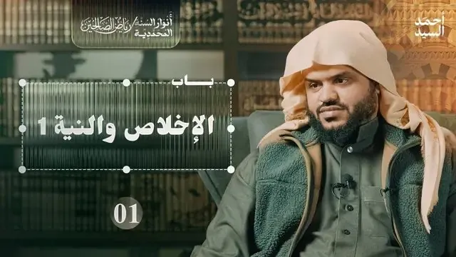
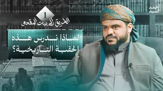
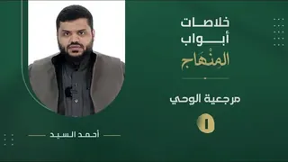

66 محاضرة
سلسلة مرئية
أنوار السنة المحمدية | رياض الصالحين
آخر تحديث 14 أبريل 2024

66 محاضرة

شاهد السلسلة على يوتيوب
الحلقات
66 حلقة

رياض الصالحين 04 | باب التوبة 2 | أنوار السنة المحمدية
04
رياض الصالحين 05 | باب التوبة 3 | أنوار السنة المحمدية
05
رياض الصالحين 06 | باب الصبر 1 | أنوار السنة المحمدية
06
رياض الصالحين 07 | باب الصبر 2 | أنوار السنة المحمدية
07
رياض الصالحين 08 | باب الصبر 3 | أنوار السنة المحمدية
08
رياض الصالحين 09 | باب الصبر 4 | أنوار السنة المحمدية
09
رياض الصالحين 10 | باب الصبر 5 | أنوار السنة المحمدية
10
رياض الصالحين 11 | باب الصبر 6 | أنوار السنة المحمدية
11
رياض الصالحين 12 | باب الصدق | أنوار السنة المحمدية
12
رياض الصالحين 13 | باب المراقبة 1 | أنوار السنة المحمدية
13
رياض الصالحين 14 | باب المراقبة 2 | أنوار السنة المحمدية
14
رياض الصالحين 15 | باب المراقبة 3 | أنوار السنة المحمدية
15
رياض الصالحين 16 | باب التقوى | أنوار السنة المحمدية
16
رياض الصالحين 17 | باب اليقين والتوكل 1 | أنوار السنة المحمدية
17
رياض الصالحين 18 | باب اليقين والتوكل 2 | أنوار السنة المحمدية
18
رياض الصالحين 19 | باب اليقين والتوكل 3 | أنوار السنة المحمدية
19
رياض الصالحين 20 | باب الاستقامة | أنوار السنة المحمدية
20
رياض الصالحين 21 | باب التفكر | أنوار السنة المحمدية
21
رياض الصالحين 22 | باب المبادرة إلى الخيرات | أنوار السنة المحمدية
22
رياض الصالحين 23 | باب المجاهدة 1 | أنوار السنة المحمدية
23
رياض الصالحين 24 | باب المجاهدة 2 | أنوار السنة المحمدية
24
رياض الصالحين 25 | باب المجاهدة 3 | أنوار السنة المحمدية
25
رياض الصالحين 26 | باب المجاهدة 4 | أنوار السنة المحمدية
26
رياض الصالحين 27 | باب الحث على الازدياد من الخير في أواخر العمر | أنوار السنة المحمدية
27
رياض الصالحين 28 | باب في بيان كثرة طرق الخير 1 | أنوار السنة المحمدية
28
رياض الصالحين 29 | باب في بيان كثرة طرق الخير 2 | أنوار السنة المحمدية
29
رياض الصالحين 30 | باب في بيان كثرة طرق الخير 3 | أنوار السنة المحمدية
30

عرض جميع الحلقات (30)

تابع المشاهدة
سلاسل أخرى
خير القرون
41 محاضرة · 4 أبريل 2024

الطريق إلى بيت المقدس | سيرة نور الدين وصلاح الدين
23 محاضرة · 16 فبراير 2024

خلاصات أبواب المنهاج من ميراث النبوة
12 محاضرة · 2 فبراير 2024
